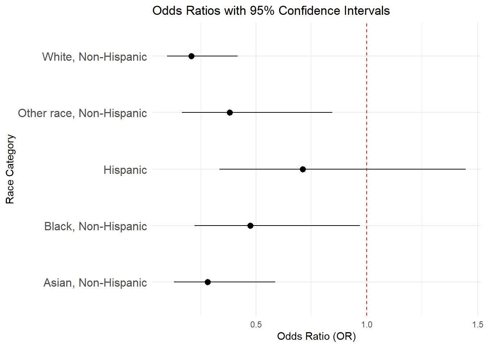

Data Analysis
knitr::opts_chunk$set(message = FALSE, warning = FALSE)
library(tidyverse)## ── Attaching core tidyverse packages ──────────────────────── tidyverse 2.0.0 ──
## ✔ dplyr 1.1.4 ✔ readr 2.1.5
## ✔ forcats 1.0.0 ✔ stringr 1.5.1
## ✔ ggplot2 3.5.1 ✔ tibble 3.2.1
## ✔ lubridate 1.9.3 ✔ tidyr 1.3.1
## ✔ purrr 1.0.2
## ── Conflicts ────────────────────────────────────────── tidyverse_conflicts() ──
## ✖ dplyr::filter() masks stats::filter()
## ✖ dplyr::lag() masks stats::lag()
## ℹ Use the conflicted package (<http://conflicted.r-lib.org/>) to force all conflicts to become errorslibrary(haven)
library(readxl)
library(plotly)##
## Attaching package: 'plotly'
##
## The following object is masked from 'package:ggplot2':
##
## last_plot
##
## The following object is masked from 'package:stats':
##
## filter
##
## The following object is masked from 'package:graphics':
##
## layoutlibrary(sf)## Linking to GEOS 3.11.0, GDAL 3.5.3, PROJ 9.1.0; sf_use_s2() is TRUElibrary(VGAM)## Loading required package: stats4
## Loading required package: splinesData Importing, Cleaning and Selecting
brfss_22 = read_csv("NYSDOH_BRFSS_Survey_Data_2022.csv")|>
janitor::clean_names()zipcode =
brfss_22 |>
filter(zipcode1 != "Data do not meet the criteria for statistical reliability, data quality or confidentiality (data are suppressed)")
head(zipcode)## # A tibble: 0 × 343
## # ℹ 343 variables: state <chr>, fmonth <dbl>, idate <chr>, imonth <chr>,
## # iday <chr>, iyear <dbl>, seqno <dbl>, psu <dbl>, celphon1 <dbl>,
## # colgsex1 <dbl>, numadult <dbl>, landsex1 <dbl>, respslct <chr>,
## # hhadult <dbl>, sexvar <chr>, genhlth <chr>, physhlth <chr>, menthlth <chr>,
## # poorhlth <chr>, priminsr <chr>, persdoc3 <chr>, medcost1 <chr>,
## # checkup1 <chr>, exerany2 <chr>, sleptim1 <chr>, lastden4 <chr>,
## # rmvteth4 <chr>, cvdinfr4 <chr>, cvdcrhd4 <chr>, cvdstrk3 <chr>, …county =
brfss_22 |>
filter(ctycode2 != "Data do not meet the criteria for statistical reliability, data quality or confidentiality (data are suppressed)")
head(county)## # A tibble: 0 × 343
## # ℹ 343 variables: state <chr>, fmonth <dbl>, idate <chr>, imonth <chr>,
## # iday <chr>, iyear <dbl>, seqno <dbl>, psu <dbl>, celphon1 <dbl>,
## # colgsex1 <dbl>, numadult <dbl>, landsex1 <dbl>, respslct <chr>,
## # hhadult <dbl>, sexvar <chr>, genhlth <chr>, physhlth <chr>, menthlth <chr>,
## # poorhlth <chr>, priminsr <chr>, persdoc3 <chr>, medcost1 <chr>,
## # checkup1 <chr>, exerany2 <chr>, sleptim1 <chr>, lastden4 <chr>,
## # rmvteth4 <chr>, cvdinfr4 <chr>, cvdcrhd4 <chr>, cvdstrk3 <chr>, …· we try to filter people who live in NYC, but all data are confidential.
Subset Dataset Cleaning
cleaned_df =
brfss_22 |>
filter(complete.cases(imprace, educag, incomg1, strsmeal_sa, genhlth))|>
select(imprace, educag, incomg1, strsmeal_sa, genhlth)cleaned_df =
cleaned_df |>
mutate(
income = case_when(
incomg1 %in% c("Less than $15,000", "$25,000 to < $35,000", "$35,000 to < $50,000") ~"<50,000",
incomg1 == "$50,000 to < $100,000" ~ "50,000 ~ 100,000",
incomg1 %in% c ("$100,000 to < $200,000" , "$200,000 or more") ~ ">100,000",
TRUE ~ NA_character_),
education = case_when(
educag == "Did not graduate High School" ~ "Less than high school",
educag == "Graduated High School" ~ "High school or GED",
educag == "Attended College or Technical School" ~ "Some post-high school",
educag == "Graduated from College or Technical School" ~ "College graduate"
),
food_insecure = case_when(
strsmeal_sa %in% c("Rarely","Sometimes","Usually", "Always") ~ 1,
strsmeal_sa == "Never" ~ 0)
)|>
filter(!is.na(income), !is.na(education))|>
select(-incomg1, -educag, -strsmeal_sa)Cleaning Step:
· First filtering all valid values in the following variables: imprace, educag, incomg1, strsmeal_sa, genhlth.
· Only selecting these variables that we will use in the following steps because the original dataset is too large. It is easy to make a subset dataset.
· After first step filtering, we re-categorize income3, educag, and strsmeal_sa. The most noticeable change is re-categorizing strsmeal_sa into a new variable “food-insecure”. We combine rarely, sometimes, usually, and always into “1” to represent food insecure challenge that individuals face, and contain never as 0 to represent no food insecure.
· Last, we remove all missing values from the sub dataset.
Figures Making
ggplot(data = cleaned_df, aes(x = imprace, fill = imprace))+
geom_bar() +
labs(
title = "Distribution of Race/Ethnicity",
x = "Race/Ethnicity",
y = "Count"
) +
theme_minimal() +
theme(axis.text.x = element_text(angle = 45, hjust = 1)) 
This bar graph illustrates the distribution of race/ethnicity in the dataset. The categories include American Indian/Alaskan Native, Asian, Black, Hispanic, Other Race, and White, all specified as Non-Hispanic except for the Hispanic group. Among these groups, White, Non-Hispanic individuals dominate, with the highest count exceeding 6,000. The second most prevalent group is Hispanic, followed by Black, Non-Hispanic, while Other Race, Non-Hispanic, and Asian, Non-Hispanic, show significantly smaller counts. The American Indian/Alaskan Native, Non-Hispanic category represents the smallest group.
ggplot(cleaned_df, aes(x = "", fill = education)) +
geom_bar(width = 1, stat = "count") +
coord_polar(theta = "y") +
labs(
title = "Distribution of Education Levels",
fill = "Education Level"
) +
theme_void() +
theme(legend.position = "right")
This pie chart shows the distribution of education levels within a dataset. The largest portion of the chart is represented by college graduates, shown in red, indicating that a significant proportion of individuals have completed higher education. The second-largest category, represented in purple, corresponds to individuals with some post-high school education. High school graduates or those with a GED, shown in green, form a smaller segment, while the smallest portion of the chart, in teal, represents individuals with less than a high school education.
ggplot(cleaned_df, aes(x = as.factor(food_insecure), fill = as.factor(food_insecure))) +
geom_bar() +
scale_fill_manual(values = c("0" = "lightblue", "1" = "pink"), labels = c("Not Food Insecure", "Food Insecure")) +
labs(
title = "Distribution of Food Insecurity",
x = "Food Insecurity",
y = "Count",
fill = "Status"
) +
theme_minimal()
This bar graph presents the distribution of food insecurity status among individuals in the dataset. The largest group, represented in light blue, comprises individuals who are not food insecure, with a count exceeding 4,000. The second-largest group, shown in pink, represents individuals who are food insecure, numbering slightly over 2,000. A very small proportion, represented in gray, corresponds to missing data (NA) for food insecurity status.
cleaned_df =
cleaned_df |>
mutate(
imprace = as.factor(imprace),
income = as.factor(income),
education = as.factor(education),
genhlth = as.factor(genhlth)
)Logistic Regression Models
Is income associated with food insecure?
logit_income =
glm(formula = food_insecure ~ income, data = cleaned_df, family = binomial)summary(logit_income)##
## Call:
## glm(formula = food_insecure ~ income, family = binomial, data = cleaned_df)
##
## Coefficients:
## Estimate Std. Error z value Pr(>|z|)
## (Intercept) 0.15825 0.04214 3.756 0.000173 ***
## income>100,000 -1.79779 0.07055 -25.484 < 2e-16 ***
## income50,000 ~ 100,000 -1.05163 0.06343 -16.580 < 2e-16 ***
## ---
## Signif. codes: 0 '***' 0.001 '**' 0.01 '*' 0.05 '.' 0.1 ' ' 1
##
## (Dispersion parameter for binomial family taken to be 1)
##
## Null deviance: 8531.8 on 6720 degrees of freedom
## Residual deviance: 7767.5 on 6718 degrees of freedom
## (14 observations deleted due to missingness)
## AIC: 7773.5
##
## Number of Fisher Scoring iterations: 4exp_income = exp(cbind(OR=coef(logit_income),confint(logit_income)))
knitr::kable(exp_income)| OR | 2.5 % | 97.5 % | |
|---|---|---|---|
| (Intercept) | 1.1714559 | 1.0786807 | 1.2724394 |
| income>100,000 | 0.1656645 | 0.1441346 | 0.1900589 |
| income50,000 ~ 100,000 | 0.3493678 | 0.3084065 | 0.3954708 |
Intercept: The odds ratio for the intercept (1.171) represents the baseline odds of being food insecure when income is less than 50,000. Since the 95% confidence interval (1.079–1.272) does not include 1, it is statistically significant.
OR: Income > 100,000: The odds ratio (0.166) indicates that individuals with an income greater than $100,000 have 83.4% lower odds of being food insecure compared to the income group less than 50,000. The 95% confidence interval (0.144–0.191) excludes 1, making this result statistically significant.
Income 50,000–100,000: The odds ratio (0.349) indicates that individuals with an income between $50,000 and 100,000 have 65.1% lower odds of being food insecure compared to the income group less than 50,000. The 95% confidence interval (0.308–0.395) excludes 1, so this result is also statistically significant.
Statistical significance: confidence intervals of OR of both predictor levels exclude 1, indicating that they are statistically associated with food insecure.
Confidence Interval
ci_income = as.data.frame(exp_income)
ci_income =
ci_income |>
rownames_to_column("Variable") |>
filter(Variable != "(Intercept)") ggplot(ci_income, aes(y = Variable, x = OR, xmin = `2.5 %`, xmax = `97.5 %`)) +
geom_pointrange() +
geom_vline(xintercept = 1, linetype = "dashed", color = "red") +
labs(
title = "Odds Ratios with 95% Confidence Intervals",
x = "Odds Ratio (OR)",
y = "Income Category"
) +
theme_minimal() +
theme(axis.text.y = element_text(size = 12))
Is race associated with food insecure?
logit_race =
glm(food_insecure ~ imprace, data = cleaned_df, family = binomial)summary(logit_race)##
## Call:
## glm(formula = food_insecure ~ imprace, family = binomial, data = cleaned_df)
##
## Coefficients:
## Estimate Std. Error z value Pr(>|z|)
## (Intercept) 0.4700 0.3291 1.428 0.15330
## impraceAsian, Non-Hispanic -1.1448 0.3494 -3.277 0.00105 **
## impraceBlack, Non-Hispanic -0.6395 0.3388 -1.888 0.05907 .
## impraceHispanic -0.1845 0.3368 -0.548 0.58379
## impraceOther race, Non-Hispanic -0.8530 0.3817 -2.235 0.02544 *
## impraceWhite, Non-Hispanic -1.4665 0.3307 -4.434 9.25e-06 ***
## ---
## Signif. codes: 0 '***' 0.001 '**' 0.01 '*' 0.05 '.' 0.1 ' ' 1
##
## (Dispersion parameter for binomial family taken to be 1)
##
## Null deviance: 8531.8 on 6720 degrees of freedom
## Residual deviance: 8193.8 on 6715 degrees of freedom
## (14 observations deleted due to missingness)
## AIC: 8205.8
##
## Number of Fisher Scoring iterations: 4exp_race = exp(cbind(OR=coef(logit_race),confint(logit_race)))
knitr::kable(exp_race)| OR | 2.5 % | 97.5 % | |
|---|---|---|---|
| (Intercept) | 1.6000000 | 0.8482021 | 3.1174422 |
| impraceAsian, Non-Hispanic | 0.3182870 | 0.1573729 | 0.6250436 |
| impraceBlack, Non-Hispanic | 0.5275735 | 0.2660540 | 1.0145649 |
| impraceHispanic | 0.8315217 | 0.4208835 | 1.5927584 |
| impraceOther race, Non-Hispanic | 0.4261364 | 0.1982346 | 0.8920934 |
| impraceWhite, Non-Hispanic | 0.2307309 | 0.1180762 | 0.4366356 |
Intercept: The odds ratio for the intercept (1.6) represents the odds of being food insecure for the reference group (American Indian/Alaskan Native). Since the 95% confidence interval (0.848–3.117) includes 1, this result is not statistically significant.
OR: Asian, Non-Hispanic: The odds ratio (0.318) indicates that Asian, Non-Hispanic individuals have 68.2% lower odds of being food insecure compared to American Indians. The 95% confidence interval (0.157–0.625) excludes 1, so this result is statistically significant.
Black, Non-Hispanic: The odds ratio (0.528) suggests that Black, Non-Hispanic individuals have 47.2% lower odds of being food insecure compared to American Indians. However, the 95% confidence interval (0.266–1.015) includes 1, making this result not statistically significant.
Hispanic: The odds ratio (0.832) implies that Hispanic individuals have 16.8% lower odds of being food insecure compared to American Indians. Since the 95% confidence interval (0.421–1.593) includes 1, this result is not statistically significant.
Other Race, Non-Hispanic: The odds ratio (0.426) indicates that individuals of Other Race, Non-Hispanic have 57.4% lower odds of being food insecure compared to American Indians. The 95% confidence interval (0.198–0.892) excludes 1, so this result is statistically significant.
White, Non-Hispanic: The odds ratio (0.230) suggests that White, Non-Hispanic individuals have 77% lower odds of being food insecure compared to American Indians. The 95% confidence interval (0.118–0.437) excludes 1, so this result is statistically significant.
Statistical significance: confidence intervals of OR of all predictor levels except Black and Hispanic exclude 1, indicating that these predictor levels are statistically significant.
Confidence Interval
ci_race = as.data.frame(exp_race)
ci_race =
ci_race |>
rownames_to_column("Variable") |>
filter(Variable != "(Intercept)") ggplot(ci_race, aes(y = Variable, x = OR, xmin = `2.5 %`, xmax = `97.5 %`)) +
geom_pointrange() +
geom_vline(xintercept = 1, linetype = "dashed", color = "red") +
labs(
title = "Odds Ratios with 95% Confidence Intervals",
x = "Odds Ratio (OR)",
y = "Income Category"
) +
theme_minimal() +
theme(axis.text.y = element_text(size = 12))Is education associated with food insecure?
logit_edu =
glm(food_insecure ~ education, data = cleaned_df, family = binomial)summary(logit_edu)##
## Call:
## glm(formula = food_insecure ~ education, family = binomial, data = cleaned_df)
##
## Coefficients:
## Estimate Std. Error z value Pr(>|z|)
## (Intercept) -1.17472 0.03990 -29.44 <2e-16 ***
## educationHigh school or GED 0.89353 0.06799 13.14 <2e-16 ***
## educationLess than high school 1.65655 0.12013 13.79 <2e-16 ***
## educationSome post-high school 0.75108 0.06534 11.49 <2e-16 ***
## ---
## Signif. codes: 0 '***' 0.001 '**' 0.01 '*' 0.05 '.' 0.1 ' ' 1
##
## (Dispersion parameter for binomial family taken to be 1)
##
## Null deviance: 8531.8 on 6720 degrees of freedom
## Residual deviance: 8181.7 on 6717 degrees of freedom
## (14 observations deleted due to missingness)
## AIC: 8189.7
##
## Number of Fisher Scoring iterations: 4exp_edu = exp(cbind(OR=coef(logit_edu),confint(logit_edu)))
knitr::kable(exp_edu)| OR | 2.5 % | 97.5 % | |
|---|---|---|---|
| (Intercept) | 0.3089064 | 0.2855101 | 0.3338597 |
| educationHigh school or GED | 2.4437471 | 2.1388216 | 2.7921872 |
| educationLess than high school | 5.2412235 | 4.1483184 | 6.6458564 |
| educationSome post-high school | 2.1192858 | 1.8644532 | 2.4088344 |
Intercept: The odds ratio for the intercept (0.309) represents the odds of being food insecure for individuals in the reference group (College graduates).
OR: High School or GED: The odds ratio (2.444) indicates that individuals with a high school diploma or GED have 144.4% higher odds of being food insecure compared to college graduates.
Less than High School: The odds ratio (5.241) suggests that individuals with less than a high school education have 424.1% higher odds of being food insecure compared to college graduates.
Some Post-High School: The odds ratio (2.119) indicates that individuals with some post-high school education have 111.9% higher odds of being food insecure compared to college graduates.
Statistical significance: confidence intervals of OR of all three predictor levels exclude 1, making these results statistically significant.
Confidence Interval
ci_edu = as.data.frame(exp_edu)
ci_edu =
ci_edu |>
rownames_to_column("Variable") |>
filter(Variable != "(Intercept)") ggplot(ci_edu, aes(y = Variable, x = OR, xmin = `2.5 %`, xmax = `97.5 %`)) +
geom_pointrange() +
geom_vline(xintercept = 1, linetype = "dashed", color = "red") +
labs(
title = "Odds Ratios with 95% Confidence Intervals",
x = "Odds Ratio (OR)",
y = "Income Category"
) +
theme_minimal() +
theme(axis.text.y = element_text(size = 12))
Are race, education, and income associated with food insecure?
logit_all =
glm(food_insecure ~ education + income + imprace, data = cleaned_df, family = binomial)summary(logit_all)##
## Call:
## glm(formula = food_insecure ~ education + income + imprace, family = binomial,
## data = cleaned_df)
##
## Coefficients:
## Estimate Std. Error z value Pr(>|z|)
## (Intercept) 0.53189 0.35172 1.512 0.130472
## educationHigh school or GED 0.33709 0.07560 4.459 8.25e-06 ***
## educationLess than high school 0.51381 0.13410 3.832 0.000127 ***
## educationSome post-high school 0.39938 0.07067 5.652 1.59e-08 ***
## income>100,000 -1.47996 0.07716 -19.181 < 2e-16 ***
## income50,000 ~ 100,000 -0.82727 0.06720 -12.310 < 2e-16 ***
## impraceAsian, Non-Hispanic -0.61142 0.37016 -1.652 0.098582 .
## impraceBlack, Non-Hispanic -0.35711 0.35843 -0.996 0.319098
## impraceHispanic -0.02493 0.35628 -0.070 0.944225
## impraceOther race, Non-Hispanic -0.50427 0.40436 -1.247 0.212367
## impraceWhite, Non-Hispanic -0.95198 0.35036 -2.717 0.006584 **
## ---
## Signif. codes: 0 '***' 0.001 '**' 0.01 '*' 0.05 '.' 0.1 ' ' 1
##
## (Dispersion parameter for binomial family taken to be 1)
##
## Null deviance: 8531.8 on 6720 degrees of freedom
## Residual deviance: 7556.1 on 6710 degrees of freedom
## (14 observations deleted due to missingness)
## AIC: 7578.1
##
## Number of Fisher Scoring iterations: 4exp_all = exp(cbind(OR=coef(logit_all),confint(logit_all)))
knitr::kable(exp_all)| OR | 2.5 % | 97.5 % | |
|---|---|---|---|
| (Intercept) | 1.7021419 | 0.8647852 | 3.4657343 |
| educationHigh school or GED | 1.4008627 | 1.2075946 | 1.6242264 |
| educationLess than high school | 1.6716442 | 1.2863633 | 2.1766833 |
| educationSome post-high school | 1.4909056 | 1.2977759 | 1.7120630 |
| income>100,000 | 0.2276472 | 0.1955464 | 0.2646223 |
| income50,000 ~ 100,000 | 0.4372422 | 0.3831784 | 0.4986752 |
| impraceAsian, Non-Hispanic | 0.5425790 | 0.2575868 | 1.1083291 |
| impraceBlack, Non-Hispanic | 0.6996939 | 0.3394655 | 1.3960468 |
| impraceHispanic | 0.9753822 | 0.4750575 | 1.9375440 |
| impraceOther race, Non-Hispanic | 0.6039454 | 0.2687842 | 1.3203476 |
| impraceWhite, Non-Hispanic | 0.3859749 | 0.1900830 | 0.7577675 |
Statistical Significant Predictors:
Education: Individuals with a high school diploma or GED have 40.1% higher odds of being food insecure compared to college graduates. Individuals with less than a high school education have 67.1% higher odds of being food insecure compared to college graduates. Individuals with some post-high school education have 49.1% higher odds of being food insecure compared to college graduates.
Income: Individuals earning over 100,000 have 77.2% lower odds of being food insecure compared to those earning ≤ $50,000. Individuals earning between $50,000 and $100,000 have 56.3% lower odds of being food insecure compared to those earning ≤ $50,000.
Race/Ethnicity: White, Non-Hispanic individuals have 61.4% lower odds of being food insecure compared to American Indians.
Summary: Education and income levels show significant associations with food insecurity, with lower education and income levels increasing odds of food insecurity.Among racial/ethnic groups, only White, Non-Hispanic individuals show significantly lower odds of food insecurity compared to American Indians.
Confidence Interval
ci_all = as.data.frame(exp_all)
ci_all =
ci_all |>
rownames_to_column("Variable") |>
filter(Variable != "(Intercept)") ggplot(ci_all, aes(y = Variable, x = OR, xmin = `2.5 %`, xmax = `97.5 %`)) +
geom_pointrange() +
geom_vline(xintercept = 1, linetype = "dashed", color = "red") +
labs(
title = "Odds Ratios with 95% Confidence Intervals",
x = "Odds Ratio (OR)",
y = "Income Category"
) +
theme_minimal() +
theme(axis.text.y = element_text(size = 12))
Is food insecure associated with general health?
mlogit_health =
vglm(genhlth ~ food_insecure, data = cleaned_df, family = multinomial(refLevel = "Fair"))summary(mlogit_health)## Call:
## vglm(formula = genhlth ~ food_insecure, family = multinomial(refLevel = "Fair"),
## data = cleaned_df)
##
## Coefficients:
## Estimate Std. Error z value Pr(>|z|)
## (Intercept):1 -4.59512 0.50252 -9.144 < 2e-16 ***
## (Intercept):2 0.85806 0.05997 14.309 < 2e-16 ***
## (Intercept):3 1.17943 0.05746 20.526 < 2e-16 ***
## (Intercept):4 -1.62471 0.12388 -13.115 < 2e-16 ***
## (Intercept):5 -4.37198 0.45003 -9.715 < 2e-16 ***
## (Intercept):6 1.51023 0.05552 27.199 < 2e-16 ***
## food_insecure:1 -1.31568 1.12033 -1.174 0.24025
## food_insecure:2 -1.12341 0.09919 -11.325 < 2e-16 ***
## food_insecure:3 -0.40687 0.08522 -4.774 1.81e-06 ***
## food_insecure:4 0.46750 0.16333 2.862 0.00421 **
## food_insecure:5 -1.53882 1.09779 -1.402 0.16099
## food_insecure:6 -0.93792 0.08557 -10.961 < 2e-16 ***
## ---
## Signif. codes: 0 '***' 0.001 '**' 0.01 '*' 0.05 '.' 0.1 ' ' 1
##
## Number of linear predictors: 6
##
## Names of linear predictors: log(mu[,1]/mu[,3]), log(mu[,2]/mu[,3]),
## log(mu[,4]/mu[,3]), log(mu[,5]/mu[,3]), log(mu[,6]/mu[,3]), log(mu[,7]/mu[,3])
##
## Residual deviance: 18580.58 on 40314 degrees of freedom
##
## Log-likelihood: -9290.288 on 40314 degrees of freedom
##
## Number of Fisher scoring iterations: 9
##
## Warning: Hauck-Donner effect detected in the following estimate(s):
## '(Intercept):1', '(Intercept):5'
##
##
## Reference group is level 3 of the responseexp_health = exp(cbind(OR=coef(mlogit_health),confint(mlogit_health)))
knitr::kable(exp_health)| OR | 2.5 % | 97.5 % | |
|---|---|---|---|
| (Intercept):1 | 0.0101010 | 0.0037724 | 0.0270464 |
| (Intercept):2 | 2.3585859 | 2.0970490 | 2.6527407 |
| (Intercept):3 | 3.2525253 | 2.9061006 | 3.6402458 |
| (Intercept):4 | 0.1969697 | 0.1545092 | 0.2510988 |
| (Intercept):5 | 0.0126263 | 0.0052265 | 0.0305028 |
| (Intercept):6 | 4.5277778 | 4.0609020 | 5.0483295 |
| food_insecure:1 | 0.2682927 | 0.0298527 | 2.4112053 |
| food_insecure:2 | 0.3251684 | 0.2677158 | 0.3949506 |
| food_insecure:3 | 0.6657325 | 0.5633216 | 0.7867615 |
| food_insecure:4 | 1.5959975 | 1.1587934 | 2.1981555 |
| food_insecure:5 | 0.2146341 | 0.0249609 | 1.8455962 |
| food_insecure:6 | 0.3914410 | 0.3310014 | 0.4629166 |
OR: Individuals who are food insecure have 73.2% lower odds of reporting “Poor” health compared to “Fair” health when compared to non-food insecure individuals. Food-insecure individuals have 67.4% lower odds of reporting “Good” health compared to “Fair” health than non-food insecure individuals. Food-insecure individuals have 33.4% lower odds of reporting “Very Good” health compared to “Fair” health than non-food insecure individuals. Food-insecure individuals have 59.6% higher odds of reporting “Excellent” health compared to “Fair” health than non-food insecure individuals.
Statistical significance: confidence intervals of OR of “Good”, “Very Good”, and “Excellent” health group exclude 1, indicating that these predictor levels are statistically significant.
This analysis emphasizes that food insecurity significantly affects perceived health levels. The result that individuals with food insecure have a higher odds ratio to report “Excellent” health compared to “Fair” health is very weird. The result may be influenced by individuals’ perceptions, cultural norms, and personal experiences. Furthermore, individuals who recently are experiencing food insecurity might still maintain good physical health but are at the early stages of economic or food-related struggles, leading them to perceive their health as excellent. Therefore, the limitation of this regression is excluding confouders.
Confidence Interval
coefs <- coef(summary(mlogit_health))
odds_ratios <- exp(coefs[, "Estimate"]) # Convert coefficients to odds ratios
lower_ci <- exp(coefs[, "Estimate"] - 1.96 * coefs[, "Std. Error"]) # Lower 95% CI
upper_ci <- exp(coefs[, "Estimate"] + 1.96 * coefs[, "Std. Error"]) # Upper 95% CI
# Combine into a tidy data frame
ci_data <- data.frame(
Variable = rownames(coefs),
OR = odds_ratios,
Lower = lower_ci,
Upper = upper_ci
) |>
filter(!grepl("(Intercept)", Variable)) |> # Exclude intercepts
separate(Variable, into = c("Outcome", "Predictor"), sep = ": ", fill = "right")ggplot(ci_data, aes(y = Outcome, x = OR, xmin = Lower, xmax = Upper, color = Predictor)) +
geom_pointrange() +
geom_vline(xintercept = 1, linetype = "dashed", color = "red") +
labs(
title = "Odds Ratios with 95% Confidence Intervals",
x = "Odds Ratio (OR)",
y = "Outcome (General Health)",
color = "Predictor"
) +
theme_minimal() +
theme(axis.text.y = element_text(size = 12))